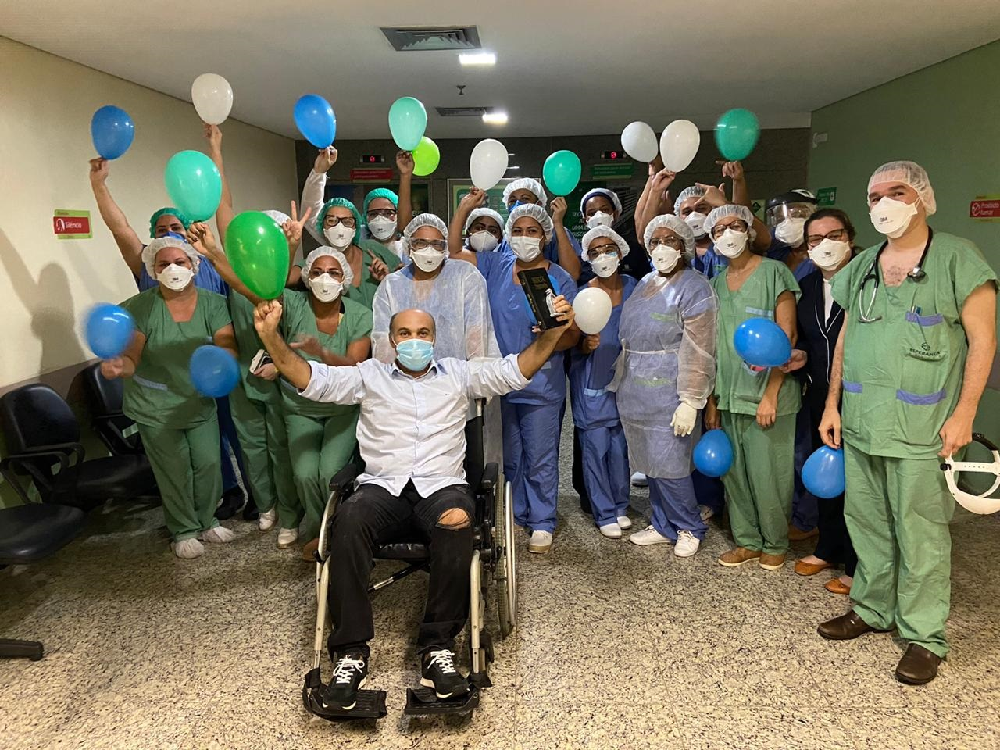
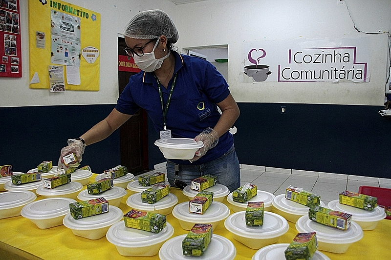
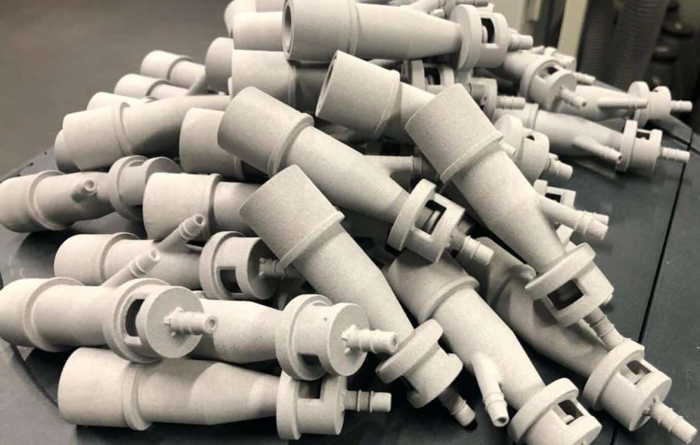

Por mais desafiadores que esteja sendo este período, queremos destacar aqui no site histórias de pessoas que venceram a doença. Vamos contar duas histórias de luta e vitória sobre o vírus. A pandemia transformou a vida de todas as pessoas, principalmente para aqueles que foram contaminados pela Covid-19, que já são mais de 121 milhões de pessoas em todo o mundo. O que é comum em todos os que compartilharam suas histórias conosco é que além de sintomas físicos, a tensão psicológica e o sofrimento – seja pela doença em si ou pelo medo – se fez presente. Em muitos casos, lidar com a apreensão e ansiedade foi ainda pior que os desconfortos físicos. Entretanto, passado esse momento de medo, eles esperam poder voltar à vida que levavam antes da pandemia, e seus depoimentos mostram que, apesar das consequências físicas e emocionais, há esperança.
A Agência Nacional de Vigilância Sanitária (Anvisa) aprovou o início dos testes em humanos da ButanVac, nova vacina do Butantan contra a Covid-19 que será produzida inteiramente no Brasil. Com o aval da agência, a fase 1 dos ensaios clínicos do novo imunizante irá começa , onde um grupo de voluntários passará pela etapa de triagem no Hemocentro de Ribeirão Preto, centro de pesquisa vinculado à Faculdade de Medicina de Ribeirão Preto da Universidade de São Paulo e que é responsável pela parte inicial do estudo.
Neste momento de combate ao novo coronavírus, a solidariedade se tornou uma das principais armas contra a pandemia. Muitos voluntários têm se mobilizado para ajudar pessoas em estado de vulnerabilidade social, idosos - mais suscetíveis a complicações da COVID-19.
Na Itália, impressoras 3D fabricam válvulas para respiradores em tempo recorde e salvam vidas. Um hospital no Norte do país europeu tinha 250 pacientes com coronavírus em terapia intensiva e com isso começaram a faltar válvulas dos respiradores para manter vivos aqueles que precisavam de oxigênio. Para o seu correto uso, as válvulas precisam ser substituídas para cada paciente e utilizadas por no máximo oito horas.
A farmacêutica portuguesa Bluepharma, sediada em Coimbra, está desenvolvendo um medicamento para o tratamento da covid-19
Com o objetivo de garantir o direito à comunicação e informação e em acordo com a Política da Fiocruz para Acessibilidade e Inclusão das Pessoas com Deficiência, a Fiocruz vem ampliando a criação de vídeos com medidas de acessibilidade. São entrevistas, coberturas de eventos, orientações gerais à população e muitas outras produções.